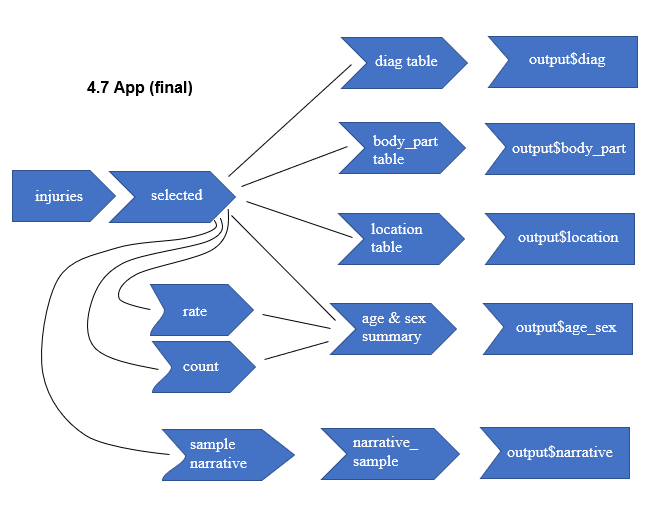
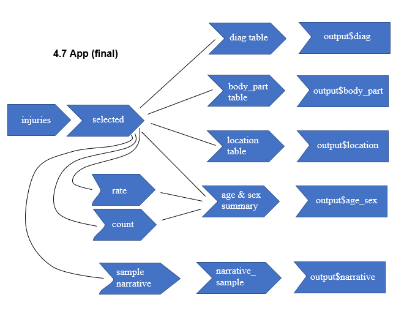

Exercise 1
Graph of 4.4

Graph of 4.5
Graph of 4.6

Graph of 4.7

Graph of 4.4
Graph of 4.5
Graph of 4.6
Graph of 4.7

If you flip these two functions, the table produces errors because the code contains unused arguments.
I determined that the maximum amount of unique values in a given column is 30, so I am using that as max number of outputs.
I changed the following pieces of code in the app.
Add a column in the UI for numeric input at the top:
column(2, numericInput("rows", "Number of Rows", value = 5, min = 0, max = 30))Make the default n-value in count_top() function 30:
count_top <- function(df, var, n = 30) {
df %>%
mutate({{ var }} := fct_lump(fct_infreq({{ var }}), n = n)) %>%
group_by({{ var }}) %>%
summarise(n = as.integer(sum(weight)))
}Use head() function in the server to reference the user input:
output$diag <- renderTable(head(count_top(selected(), diag), n = input$rows), width = "100%" )
output$body_part <- renderTable(head(count_top(selected(), body_part), n = input$rows), width = "100%")
output$location <- renderTable(head(count_top(selected(), location), n = input$rows), width = "100%")To move through the narrative, I had to create back/forward buttons and replace the sample() function from the output with observeEvent functions to calculate the index number of each narrative position.
Buttons added to the UI:
column(2, actionButton("back", "Previous")),
column(2, actionButton("forward", "Next"))Server code to display first narrative and move through the index according to which button clicked:
n <- reactiveVal(1)
observeEvent(input$back, {
n(n() - 1)
})
observeEvent(input$forward, {
n(n() + 1)
})
output$narrative <- renderText(selected()$narrative[n()])<iframe src= “https://hallc.shinyapps.io/masteringshiny_chap_4_exercises/” width = “900”; height = “900”; style = “border:none;”>